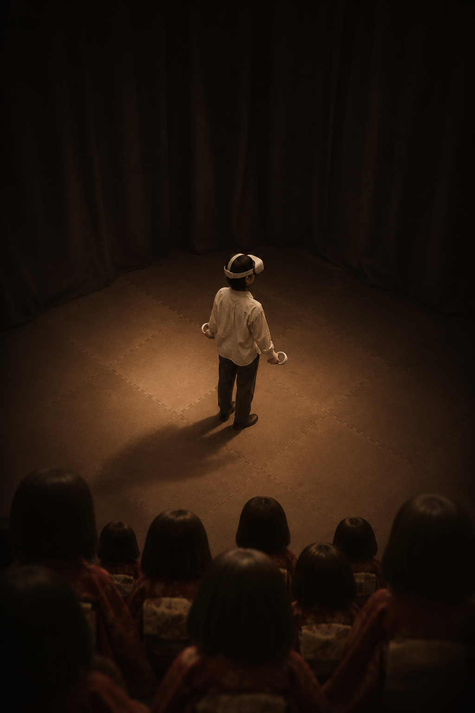
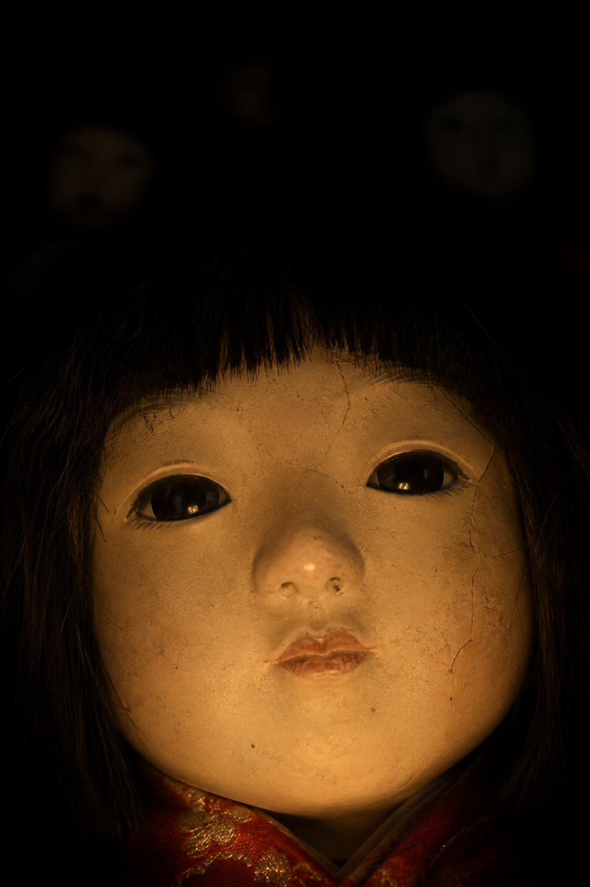
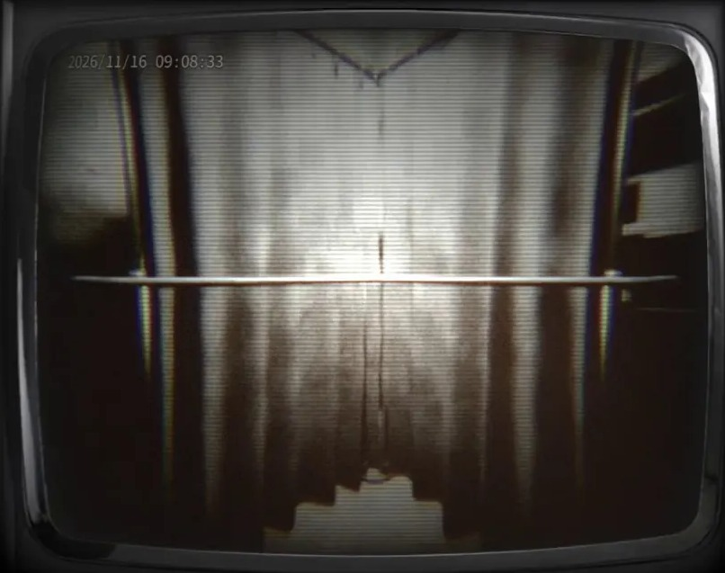
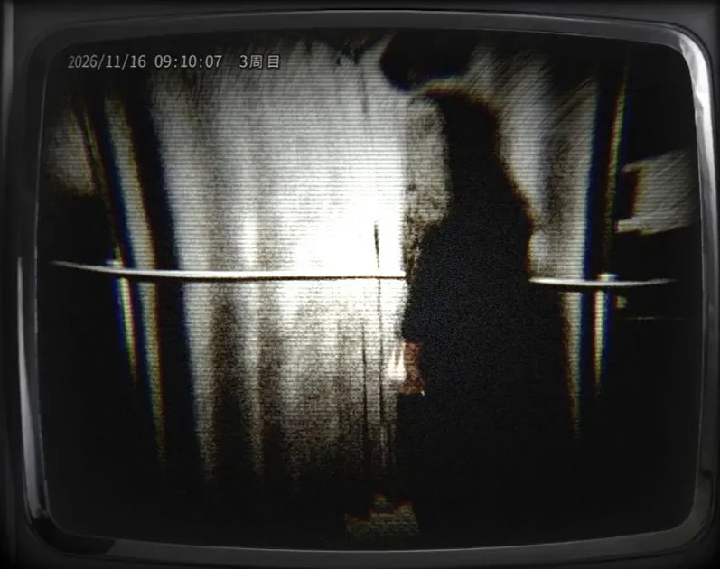
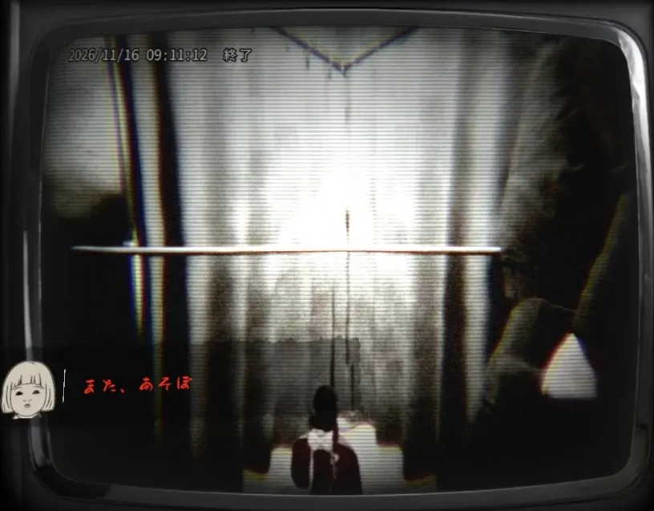
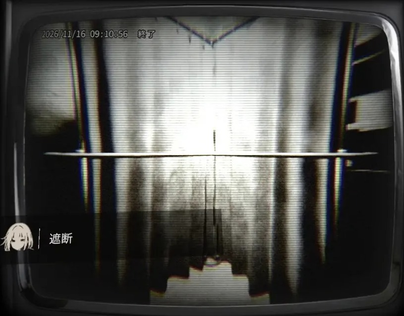
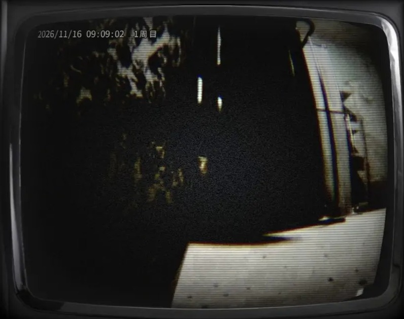
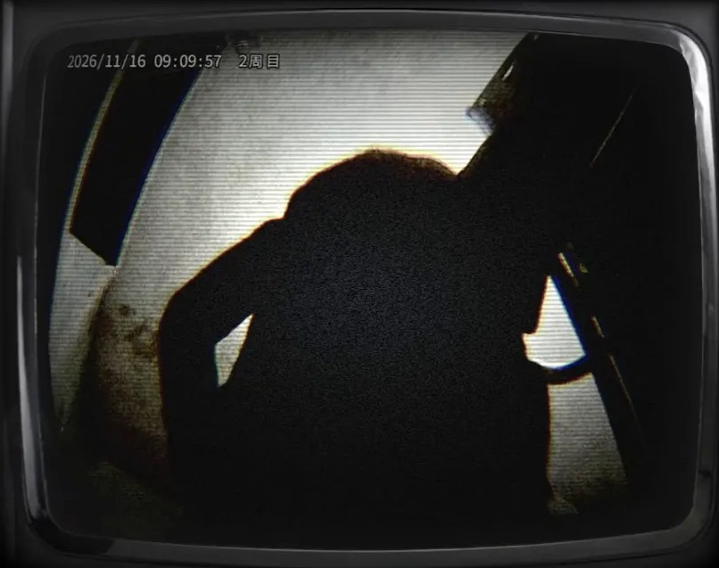
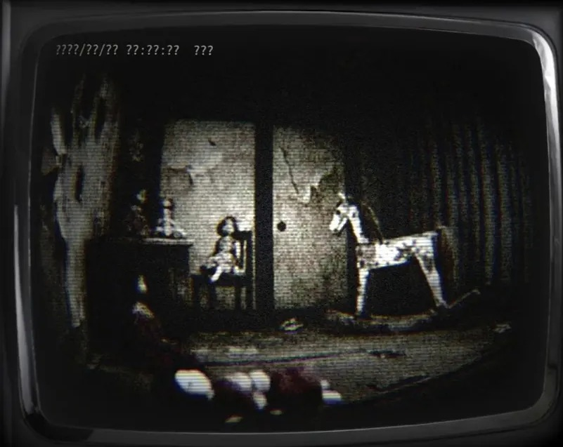
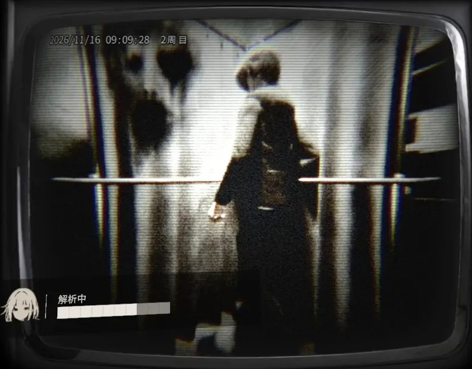
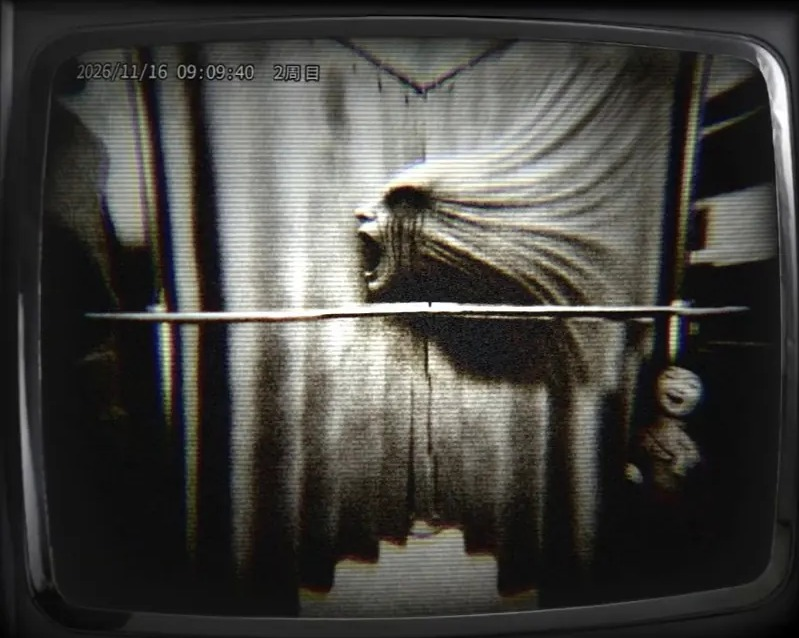
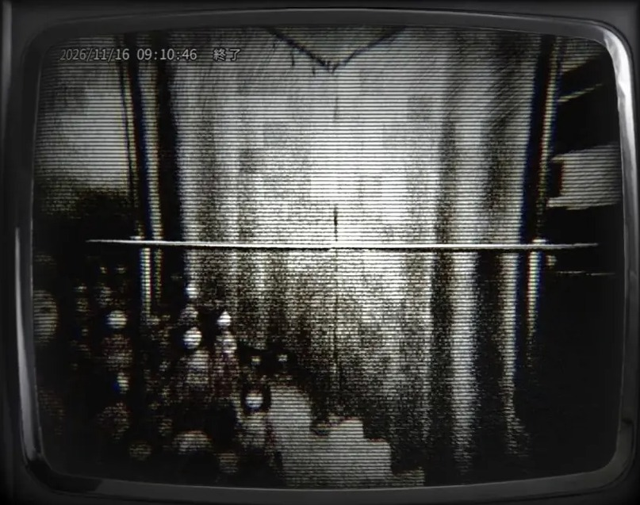
IVRC2026 総合優勝 ／ DCEXPO賞
廻るたびに狂う世界、
あなたは生きて戻れるか。
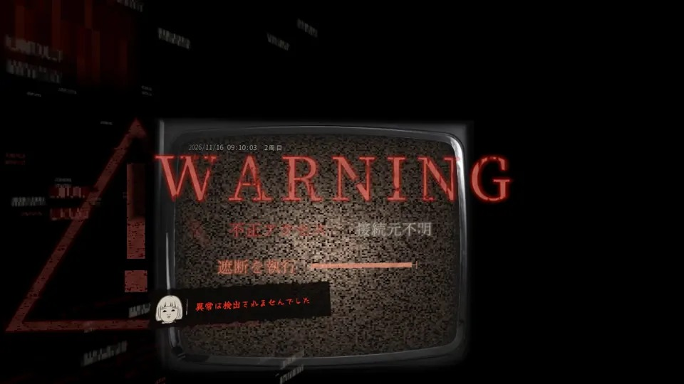
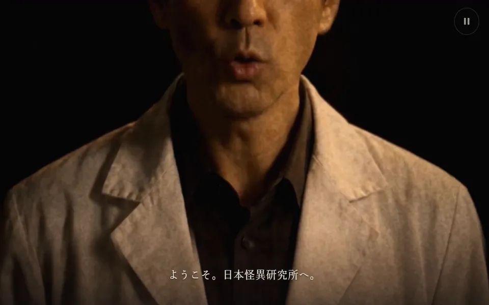

実世界 × 固定視点ホラー
監視カメラに映る自分を見ながら現実空間を歩く、固定視点のホラー体験。
企画・監督・制作リーダー白石大晴
チーム：Roil Studio 白石大晴 ／ Kim Hyunmin ／ 堀越 康平 ／ 五島 慶人
mawarimi.vercel.app
公式サイト